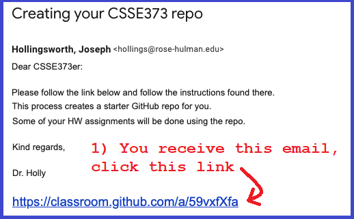

Creating the CSSE373 Repo
- In CSSE373 some of the software you will be developing will be pushed to a repo for grading
- The 5 screen shots below walk you through setting up your individual repo for the class
1. Check your email for an invitation

2. Accept the assignment from GitHub Classroom

3. Refresh your browser screen after repo configuration

4. Your individual repo is ready

5. View your repo from your browser